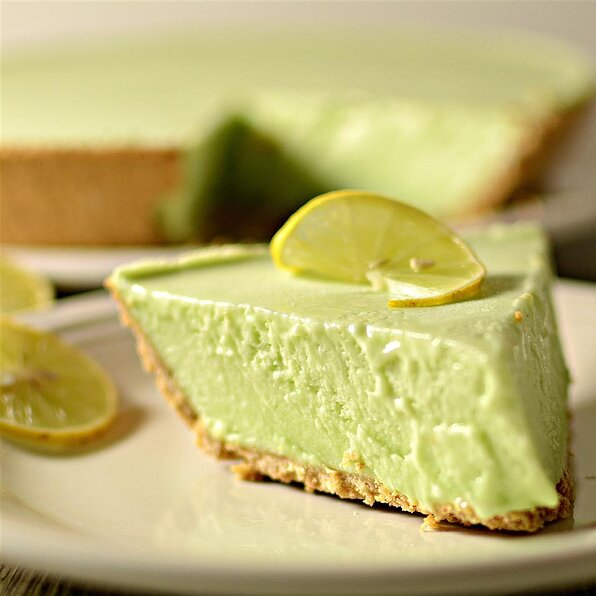

Key Lime Pie
HOME

Ingredients
- 1 (12 fluid ounce) can frozen lemonade concentrate
- ½ cup water
- 1 (3 ounce) package lime flavored Jell-O® mix
- 1 (8 ounce) package cream cheese, softened
- 1 (8 ounce) container frozen whipped topping, thawed
- 1 (9 inch) pie crust, baked
Directions
- Heat the lemonade and the water to boiling. Add the gelatin and the cream cheese and blend well.
- Fold in the non-dairy whipped topping.
- Pour mixture into the pie shell and chill or freeze. It's a breeze!